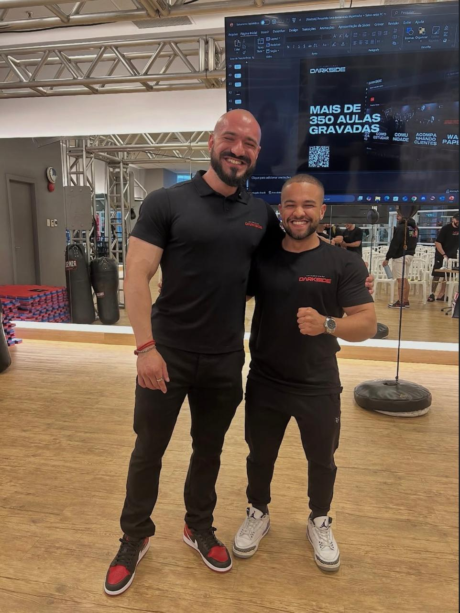
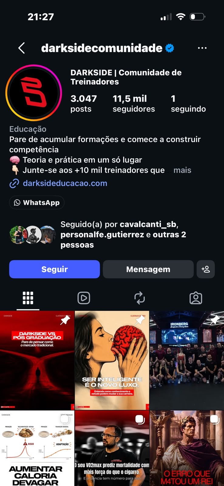
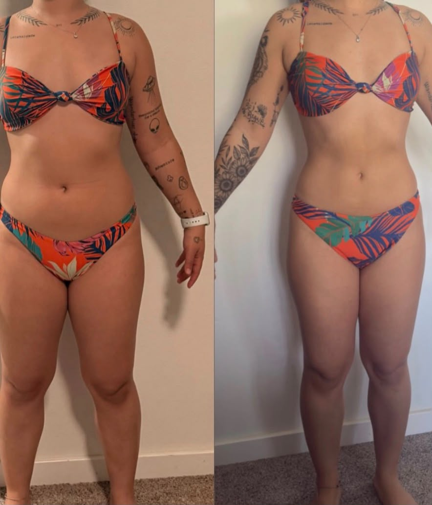
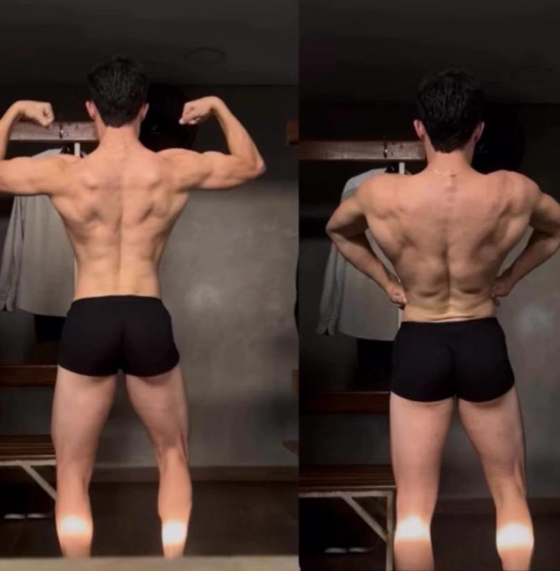
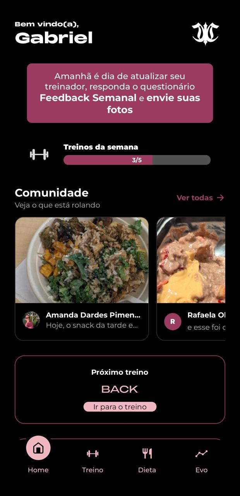
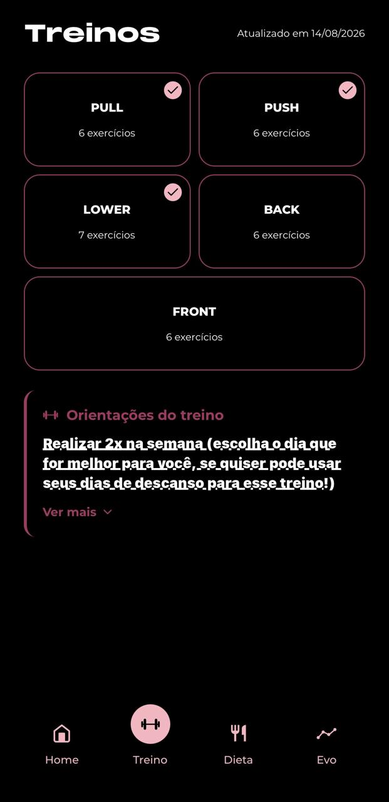
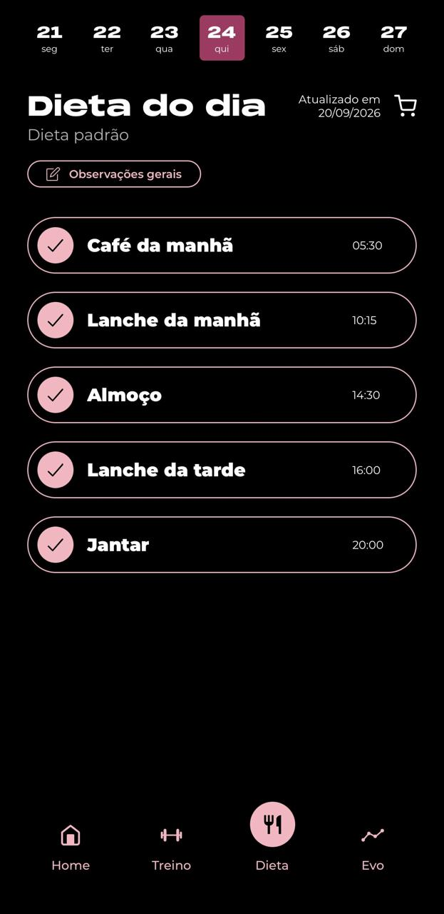
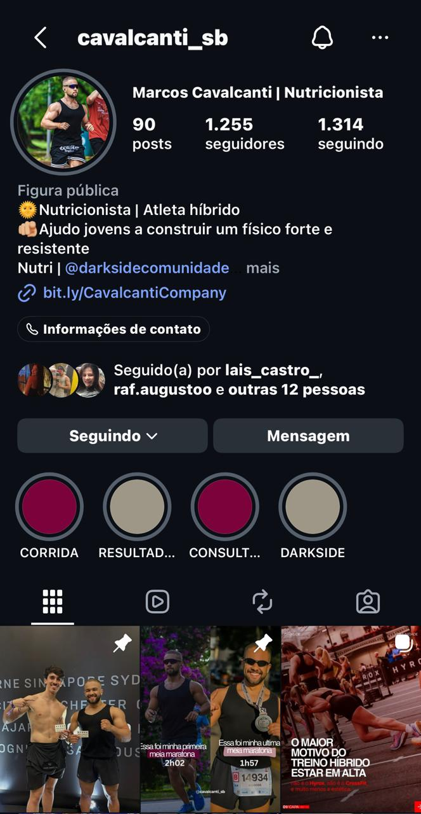

Estudo virou propósito.


Eu me formei na Universidade DarkSide e transformei meu interesse por nutrição em um trabalho dedicado a pessoas reais.
Estudei para entender muito mais do que dieta. Meu acompanhamento considera rotina, treino, objetivo, comportamento e aquilo que realmente é possível sustentar.

Hoje acompanho alunos no Brasil e também pessoas que vivem fora do país. A consultoria é online e foi estruturada para manter proximidade, estratégia e acompanhamento independentemente da distância.
O acompanhamento acontece nos detalhes.
Análise, ajustes e decisões construídas para a rotina de cada aluno.
O processo aparece no espelho.
Comparações que registram a evolução construída ao longo do acompanhamento.


100% personalizado. Participe da comunidade.
A consultoria conta com o Treino.io, um aplicativo que concentra seu acompanhamento em um só lugar. Nele, você acessa seu treino e sua dieta de forma organizada, acompanha o planejamento e mantém sua rotina sempre à mão.
Planejamento acessível no celular, com treino e dieta reunidos no mesmo ecossistema.
Use a comunidade dos alunos para compartilhar conquistas e registrar momentos importantes da sua evolução.



Um pouco mais da rotina, dos estudos e do processo.
Conteúdo sobre nutrição, treino, corrida e tudo o que faz parte dessa construção.

Quanto da sua próxima versão depende apenas de você começar?
Se você chegou até aqui, talvez já saiba a resposta.
Pode Confiar. Vamos dar o Próximo Passo.